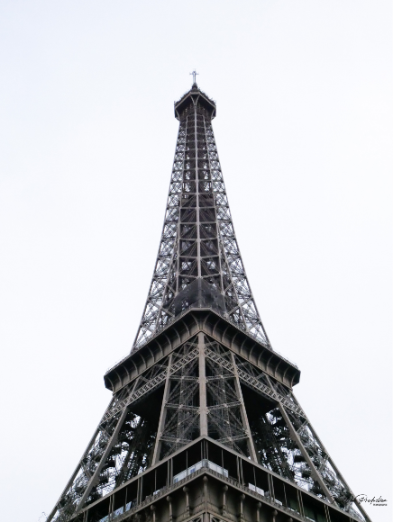
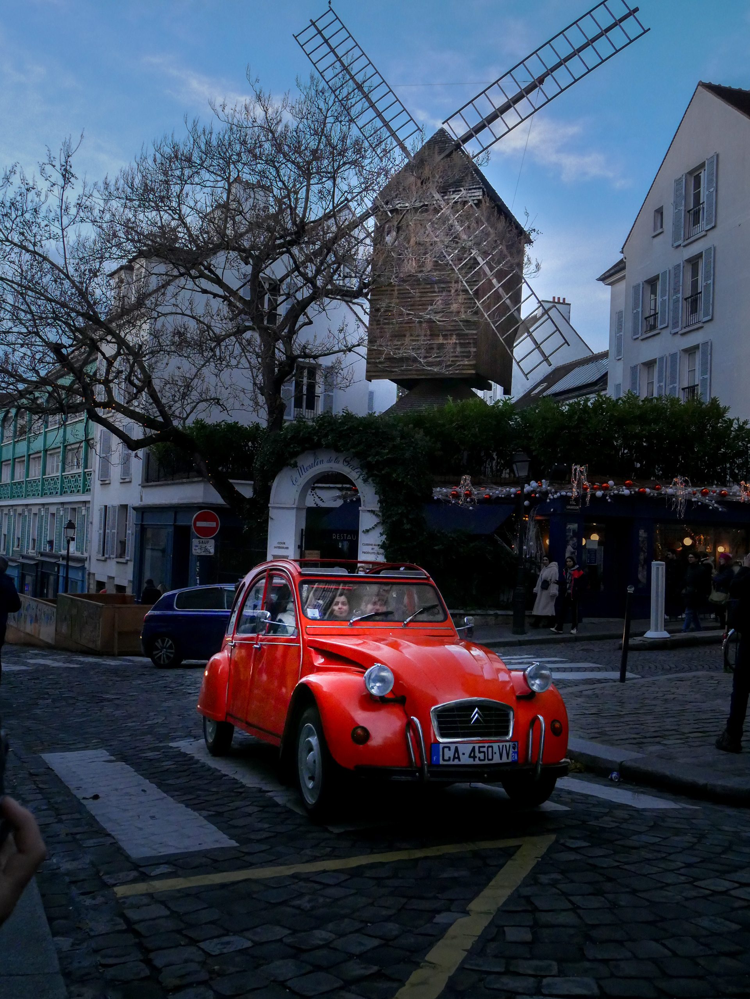

Paris est la ville de l'amour, de la culture et de la gastronomie. Capitale de la France, elle est connue pour ses monuments emblématiques tels que la tour Eiffel, le Louvre et Notre-Dame, ainsi que pour sa vie nocturne animée et ses nombreux musées.

L'Arc de Triomphe
L'Arc de Triomphe est l'un des monuments les plus célèbres de Paris. Situé au centre de la place de l'Étoile, il est un symbole de l'histoire et de la grandeur de la France.
Construit entre 1806 et 1836 sur ordre de Napoléon Bonaparte, l'Arc de Triomphe est un hommage à la gloire de l'armée française, avec les noms de ses généraux inscrits sur ses murs. Il célèbre également les victoires militaires de la France, en particulier lors des guerres napoléoniennes.
L'Arc de Triomphe est décoré de sculptures représentant des scènes de bataille, ainsi que de bas-reliefs symbolisant les valeurs de la République française, telles que la liberté, l'égalité et la fraternité.
Il est possible de monter au sommet de l'Arc de Triomphe pour profiter d'une vue panoramique sur Paris, avec une perspective unique sur l'avenue des Champs-Élysées, l'une des avenues les plus célèbres au monde.
L'Arc de Triomphe est également le lieu de célébration de nombreuses fêtes nationales, telles que la Fête de la Victoire et le Défilé du 14 juillet.
L'Arc de Triomphe est un monument emblématique de Paris, chargé d'histoire et de symbolisme, qui attire chaque année des millions de visiteurs du monde entier. C'est un lieu incontournable pour tous les amateurs d'architecture, d'histoire et de culture française.

La Tour Eiffel
La Tour Eiffel est l'un des symboles les plus emblématiques de Paris. Construite en 1889 pour l'Exposition universelle, elle mesure 324 mètres de hauteur, ce qui en faisait à l'époque la plus haute structure du monde.
La Tour Eiffel est devenue une icône de la ville de Paris, attirant chaque année des millions de visiteurs du monde entier. Il est possible de monter jusqu'au sommet de la tour, à une hauteur de 276 mètres, pour profiter d'une vue panoramique sur la ville.
La tour est également connue pour sa célèbre illumination nocturne, avec des lumières scintillantes qui éclairent la tour toutes les heures jusqu'à 1h du matin.
La Tour Eiffel est un symbole de l'ingénierie et de l'architecture française, ainsi que de l'histoire de la ville de Paris. Elle est le lieu de nombreux événements culturels et sportifs, tels que des concerts, des feux d'artifice et même des courses d'escaliers.
En bref, la Tour Eiffel est l'un des sites touristiques les plus populaires au monde, qui ne manquera pas de vous impressionner par sa beauté et son histoire.

Le Moulin de la Galette
Le Moulin de la Galette est un moulin à vent emblématique situé dans le quartier de Montmartre à Paris. Il est célèbre pour avoir été le sujet de plusieurs peintures impressionnistes, notamment de Renoir.
Construit au XVIIe siècle, le Moulin de la Galette a été utilisé pour moudre du grain et produire de la farine. Au XIXe siècle, il a été transformé en guinguette, un lieu de fête populaire où les Parisiens venaient danser, boire et manger des crêpes.
Aujourd'hui, le Moulin de la Galette est un restaurant qui perpétue la tradition de la guinguette. Les visiteurs peuvent y déguster des plats typiques français, tout en admirant la vue imprenable sur Paris depuis sa terrasse.
Le Moulin de la Galette est un témoignage de l'histoire de Paris et de son patrimoine culturel. C'est un lieu incontournable pour tous ceux qui souhaitent découvrir l'atmosphère bohème et artistique de Montmartre, ainsi que pour les amateurs de peinture impressionniste.